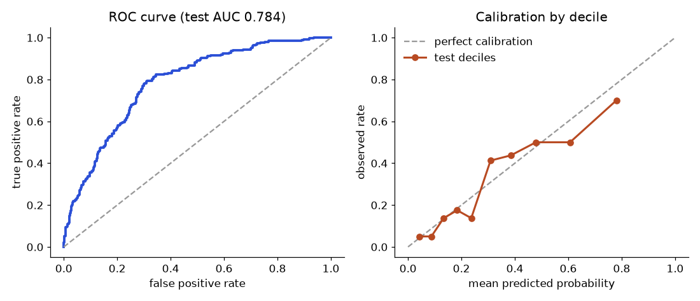

In this chapter
- 8.1 The GLM Idea and Link Functions
- 8.2 Logistic Regression and Odds Ratios
- 8.3 Poisson Regression for Counts
- 8.4 Overdispersion and the Negative Binomial Model
- 8.5 Choosing the Right GLM
- 8.6 Rates and Exposure: Offsets Done Properly
- 8.7 Excess Zeros: Zero-Inflated and Hurdle Models
- 8.8 Ordinal and Multinomial Outcomes
- 8.9 Judging a Logistic Model: AUC, Calibration and Separation
- Chapter recap
- Practice set
- Prompt pack
Ordinary linear regression predicts a number that can be anything: 120 minutes, minus 5, 3.7. But many real questions are different. "Will this parcel arrive late, yes or no?" has only two answers. "How many complaints will we get this hour?" is a count: 0, 1, 2, never 2.5 and never negative. If you force a straight line onto these, it predicts probabilities of 130 percent and error counts below zero. Generalized linear models (GLMs) fix this with one clean idea. In this chapter you learn the idea, fit logistic and Poisson regressions with a short NumPy routine, read odds ratios and marginal effects, test whether a model fits using deviance, and handle the common failure of "too much variation" with the negative binomial model. We build on OLS and MLE (see the Math PDF for MLE and log-loss) and on AIC from Chapter 7.
Two running examples, both simulated with a fixed seed so the numbers are repeatable:
- Late deliveries: 500 parcels, with
load(in units of 100 orders per hour, 1 to 10) anddistance(in 10 km units, 0 to 5). The outcome is 1 if the parcel arrived late. Result: 184 of 500 were late (36.8 percent). - Complaint counts: complaints per hour against traffic (thousands of orders per hour).
statsmodels is not installed in this environment, so I fitted the models with my own iteratively reweighted least squares (IRLS) code. In real work you would call statsmodels.api.GLM or sklearn; the numbers match because it is the same maths. Library calls shown below are standard but "not run here".
8.1 The GLM Idea and Link Functions
η = β₀ + β₁x₁ + β₂x₂. That score can be any number from minus to plus infinity. A probability must stay between 0 and 1. A count must stay at or above 0. So we pass the score through a bent pipe (a link function) that squeezes it into the allowed range. The score itself stays a simple straight-line formula.Words you need
| Word | Plain meaning | Example |
|---|---|---|
| Linear predictor η | The straight-line score β₀ + β₁x₁ + … | η = −0.65 |
| Link function g | Connects the mean of y to η: g(mean) = η | logit, log |
| Inverse link | Turns η back into a mean | 1/(1 + e^(−η)) |
| Family | The distribution of y around its mean | Bernoulli, Poisson |
| Deviance | A fit score: 2 × (ℓ_saturated − ℓ_model), lower is better | 500.8 |
A GLM has three parts: (1) a distribution for y (the family), (2) a linear predictor η, (3) a link g(μ) = η, where μ is the mean of y.
| Model | Family | Link g(μ) | Mean μ in terms of η | y looks like |
|---|---|---|---|---|
| Linear regression | Normal | identity: μ | μ = η | any number |
| Logistic regression | Bernoulli / Binomial | logit: ln(μ/(1−μ)) | μ = 1/(1+e^(−η)) | 0 or 1 |
| Poisson regression | Poisson | log: ln μ | μ = e^η | count 0, 1, 2… |
| Negative binomial | Neg. binomial | log: ln μ | μ = e^η | overdispersed count |
| Gamma regression | Gamma | log (or inverse) | μ = e^η | positive, skewed (delivery time) |
Why not just predict the mean with a straight line? Because the line leaves the allowed range. Why the log for counts? Effects become multiplicative: adding 1 to x multiplies the expected count by e^β. That matches how busy periods tend to act on complaint counts.
How the fit works
We use maximum likelihood (MLE). For these models there is no closed formula, so we use IRLS: repeat a weighted least-squares fit, updating weights from the current fit, until the coefficients stop changing. This is Newton's method (see Math PDF, second-order optimisation) in a special form. It typically converges in 5 to 8 rounds. Our code converged in 6 for both examples.
Problem 8.1.1 (tiny) A model has η = −0.65. What probability does the logit link give, and what do the odds equal?
| Formula | p = 1 / (1 + e^(−η)) |
|---|---|
| Plug in | e^(0.65) = 1.9155, so p = 1/(1 + 1.9155) |
| Compute | p = 1/2.9155 = 0.343. Odds = p/(1−p) = 0.343/0.657 = 0.522, and e^(−0.65) = 0.522. |
| Answer | η = −0.65 means a 34.3 percent chance. The odds equal e^η. |
| Check | η = 0 gives p = 0.5; negative η must give p below 0.5. Yes. |
| Why it matters | η is on the "log-odds" scale; always convert before you report to a manager. |
Problem 8.1.2 Poisson model with η = 0.15 + 0.35 × traffic. What is the expected complaint count at traffic = 4?
| Step 1 | η = 0.15 + 0.35 × 4 = 1.55. |
|---|---|
| Step 2 | μ = e^1.55 = 4.71. |
| Answer | About 4.7 complaints per hour. |
| Check | The result is positive, as a count's mean must be. A linear model could have given a negative number at low traffic. |
exp or compute probabilities.Connection to the real job. statsmodels.api.GLM(y, X, family=sm.families.Binomial()) and …Poisson(); sklearn.linear_model.LogisticRegression, PoissonRegressor, GammaRegressor. Logistic regression is the first classifier you will meet in ML.
Applications
- Data Science: churn, fraud, conversion (logistic); orders per day, tickets per hour (Poisson).
- Machine Learning: logistic regression is a one-layer neural net with a sigmoid and log-loss.
- Insurance: claim counts (Poisson, NB), claim size (Gamma).
- Operations: late-delivery probability and complaint counts as a function of order load.
Check yourself
- Which link is used for counts? Answer: The log link.
- In logistic regression, what does η = 0 mean? Answer: Probability 0.5 (odds 1).
- Why is IRLS used? Answer: GLM likelihoods have no closed-form maximum, so we solve by repeated weighted least squares.
8.2 Logistic Regression and Odds Ratios
Formal definition
odds = p / (1 − p)
logit = ln(odds) = ln(p / (1 − p)) = β₀ + β₁x₁ + β₂x₂
p = 1 / (1 + e^(−logit))Each coefficient βⱼ is the change in log-odds for one unit of xⱼ, others fixed. e^βⱼ is the odds ratio (OR): the factor by which the odds are multiplied. OR = 1 means no effect, above 1 raises the odds, below 1 lowers them. The likelihood to maximise is Σ [y ln p + (1−y) ln(1−p)], whose negative is the log-loss (see Math PDF).
| p | odds | log-odds |
|---|---|---|
| 0.5 | 1 | 0 |
| 0.2 | 0.25 | −1.386 |
| 0.8 | 4 | +1.386 |
| 0.9 | 9 | +2.197 |
Notice the symmetry: p = 0.2 and p = 0.8 have log-odds of the same size and opposite sign.
Problem 8.2.1 Fit a logistic regression for late deliveries on the 500 parcels. Report the coefficients, standard errors, odds ratios and 95 percent confidence intervals.
| Formula | CI for OR = exp(β ± 1.96 × SE). The z statistic is β / SE. |
|---|---|
| Compute | (from code, 6 IRLS iterations): |
| Term | β | SE | z | p-value | Odds ratio | 95% CI for OR |
|---|---|---|---|---|---|---|
| constant | −4.395 | 0.424 | −10.36 | ~0 | 0.012 | 0.005 to 0.028 |
| load (per 100 orders/hour) | 0.521 | 0.051 | 10.16 | ~0 | 1.683 | 1.522 to 1.861 |
| distance (per 10 km) | 0.309 | 0.079 | 3.91 | 0.00009 | 1.362 | 1.166 to 1.590 |
- Answer Each extra 100 orders per hour multiplies the odds of a late delivery by 1.68 (68 percent higher odds), holding distance fixed. Each extra 10 km multiplies the odds by 1.36. Both intervals exclude 1, so both effects are clearly real.
- Check I generated the data with true values −5, 0.6, 0.4. The estimates (−4.40, 0.52, 0.31) are close, and each true value lies within about 2 SE of its estimate. Hand check: e^0.5209 = 1.683. ✓.
- Why it matters The odds ratio is the standard way to report logistic results.
Problem 8.2.2 (combining ideas) What is the late-delivery probability at load = 6 and distance = 2? What happens if load goes to 7?
| Step 1 | η = −4.395 + 0.5209 × 6 + 0.3087 × 2 = −4.395 + 3.125 + 0.617 = −0.653. |
|---|---|
| Step 2 | p = 1/(1 + e^0.653) = 1/(1 + 1.921) = 0.342. Odds = 0.521. |
| Step 3 | At load 7: η = −0.132, p = 0.467, so the new odds are 0.467/0.533 = 0.877. New odds / old odds = 0.877/0.521 = 1.683 (code: 1.6835), equal to the OR. |
| Answer | 34.2 percent at load 6, and 46.7 percent at load 7. The probability rose by 12.5 percentage points while the odds rose by a factor of 1.68. |
| Check | The ratio of odds equals e^β exactly, a good test of the algebra. |
| Why it matters | The OR is constant but the probability change is not: it depends on where you start. |
Marginal effects
A marginal effect answers "how much does the probability change per unit of x?" For logistic regression it is p(1−p) × β, so it changes with p. The average marginal effect (AME) averages this over all rows. Here, AME for load = 0.0862, so on average one more 100 orders per hour adds about 8.6 percentage points of timeout probability; AME for payload = 0.0511, about 5.1 points per 10 KB. Non-linear models need this to give a plain-language answer.
The picture

Left panel: grey dots are the 500 parcels (0 = on time, 1 = late, jittered a little so you can see them) against load. The blue S-curve is the fitted probability with distance held at 2. It is flat near 0 on the left, rises steeply in the middle, and flattens near 1 on the right. The steepest part is where p ≈ 0.5, where the marginal effect is largest (β/4 = 0.13 per unit load). The right panel belongs to section 8.4.
Fit and diagnostics
| Quantity | Value (from code) | Meaning |
|---|---|---|
| Log-likelihood of model | −250.41 | Higher is better |
| Log-likelihood of intercept-only | −328.94 | The "no-feature" baseline |
| Residual deviance (−2ℓ) | 500.83 | Lower is better |
| Null deviance | 657.88 | Deviance with only the constant |
| Likelihood-ratio test | 157.05 on 2 df, p ≈ 8 × 10⁻³⁵ | The features help |
| AIC | 506.83 | For comparing models, as in Chapter 7 |
| McFadden pseudo-R² | 1 − (−250.41/−328.94) = 0.239 | Not like OLS R²; 0.2 to 0.4 is already good |
| Accuracy at threshold 0.5 | 0.748 | Not enough alone (see below) |
The LR test is "deviance drop = null − residual = 657.88 − 500.83 = 157.05", compared with a chi-square with 2 degrees of freedom (one per added feature).
Connection to the real job. Logistic regression is the standard baseline for any yes/no prediction: it is fast, explainable, and gives odds ratios you can show to a manager. It is also the model inside many risk scorecards at banks.
Applications
- Data Analytics: which factors raise churn odds.
- Machine Learning: baseline classifier; L1/L2 penalty from Chapter 7 applies directly (
LogisticRegression(C=…), whereC = 1/λ). - Healthcare: odds ratios for risk factors.
- Fraud and credit: scorecards.
Check yourself
- If β = 0.693, what is the OR? Answer: e^0.693 = 2.0. The odds double.
- Does OR = 2 mean the probability doubles? Answer: No, only the odds double.
- What does an OR confidence interval of 0.8 to 1.3 say? Answer: It includes 1, so no clear effect.
8.3 Poisson Regression for Counts
Formal definition
y ~ Poisson(μ), ln μ = β₀ + β₁x so μ = e^(β₀ + β₁x)A key property of the Poisson distribution is mean = variance = μ (see Chapter 2 on distributions). e^β₁ is the rate ratio: the factor by which the expected count is multiplied for a unit increase in x.
Exposure and offsets. If hours differ in length, or counts come from systems of different size, model the rate: ln μ = ln(exposure) + β₀ + β₁x. The ln(exposure) term is an offset: a column whose coefficient is forced to 1 (GLM(..., offset=np.log(exposure)) in statsmodels; not run here). Without it you would compare a 10-minute window with a 60-minute window unfairly.
Problem 8.3.1 Fit Poisson regression for complaints per hour on 300 hours of traffic data.
| Compute | (from code): intercept 0.1488 (SE 0.0885), traffic slope 0.3482 (SE 0.0202), 6 iterations. True values used to simulate: 0.2 and 0.35. |
|---|---|
| Answer | Rate ratio = e^0.3482 = 1.416. Each additional 1,000 orders per hour multiplies the expected complaint count by 1.42, a 42 percent rise. |
| Check | Slope z = 0.3482/0.0202 = 17.2: very significant. Data mean count 4.37 and variance 9.65: the variance is bigger than the mean, but part of that is explained by the changing μ across hours, not by overdispersion, as the next check shows. |
| Why it matters | Compounding is the point: 5 more thousand multiplies by 1.416⁵ = 5.7, not by 1 + 5 × 0.42. |
Problem 8.3.2 Is the Poisson model a good fit? Use the deviance and the Pearson ratio.
| Formula | Residual deviance = 2 Σ [y ln(y/μ̂) − (y − μ̂)]. Pearson dispersion = Σ (y − μ̂)² / μ̂ / (n − p). |
|---|---|
| Compute | Deviance = 347.41 on 298 degrees of freedom (300 rows − 2 parameters). Pearson ratio = 1.056. |
| Answer | For a well-fitting Poisson model both ratios are close to 1. Deviance/df = 1.17 and Pearson = 1.06 are fine. No sign of overdispersion. |
| Check | Mean and variance of residual counts should be close once μ̂ is used. Pearson near 1.0 says so. |
| Why it matters | This test costs nothing and prevents wrong confidence intervals. |
Connection to the real job. Counts per time unit (orders, tickets, defects, calls), rate modelling with exposure, and demand forecasting inputs. Also the loss in many deep-learning count models.
Applications
- Operations: tickets per day, delivery complaints per week.
- Insurance and healthcare: claim counts, hospital admissions.
- Marketing: purchases per customer.
- Web analytics: page views per session (often overdispersed, see next).
Check yourself
- Poisson mean = 6. What is its variance? Answer: 6.
- β = 0.2 in a Poisson model. Rate ratio? Answer: e^0.2 = 1.22.
- What is an offset for? Answer: To model rates when exposure (time or size) differs between rows.
8.4 Overdispersion and the Negative Binomial Model
Formal definition
Overdispersion means variance is greater than the mean. The negative binomial (NB) regression keeps the log link and the mean μ = e^η, but the variance is
Var(y) = μ + α × μ² (α ≥ 0; α = 0 is Poisson)It arises when the Poisson rate is itself random with a Gamma distribution (a "Gamma-Poisson mixture"). A big α means lots of extra wobble.
Problem 8.4.1 Simulate 400 hours where the true model has mean e^(0.2 + 0.3 × traffic) and α = 0.5. Fit Poisson first. Then fit NB.
| Step 1 | Data: mean count = 3.76 but variance = 15.19. Variance is four times the mean. Red flag. |
|---|---|
| Step 2 | Poisson fit: intercept 0.016, slope 0.3358 (SE 0.0192). Pearson dispersion = 2.87. A value well above 1 confirms overdispersion. |
| Step 3 | The quasi-Poisson fix: multiply the SE by √2.87 = 1.695: slope SE becomes 0.0326, which is 1.7 times larger. The point estimate stays the same. |
| Step 4 | NB fit by maximum likelihood (scipy.optimize, BFGS): intercept 0.007, slope 0.3379 (numerical SE 0.0317), α = 0.507. True α was 0.5. |
| Step 5 | Compare: Poisson log-likelihood −1078.21, AIC 2160.4. NB log-likelihood −924.49, AIC 1854.97 (3 parameters including α). |
| Answer | NB wins by 305 AIC points; α is recovered correctly at 0.507. The Poisson SE (0.0192) was too small by about 40 percent compared to the NB SE (0.0317). |
| Check | The NB-based SE (0.0317) and the quasi-Poisson SE (0.0326) agree. LR statistic for α = 0 is 307.4 (a very large number, so overdispersion is real). |
| Why it matters | With the Poisson SE, you would have reported a confidence interval that is 40 percent too narrow, and "significant" results that are not. |
The right panel of the figure above shows this. Grey dots are the counts. The solid line is the fitted mean. The dashed line is "mean + 2 standard deviations" under Poisson, which cuts across the cloud, so many dots lie above it. The red dotted line is the same band under NB, wider and about right.
Other counts problems you may meet: too many zeros (zero-inflated models), counts that can never be zero (truncated models). Both are extensions; ignore them until you see a histogram with a large spike at 0.
Connection to the real job. sm.GLM(..., family=sm.families.NegativeBinomial(alpha=…)) or sm.NegativeBinomial (the latter estimates α; not run here). In scikit-learn there is PoissonRegressor but no standard NB regressor.
Applications
- Web and product analytics: visits, clicks, purchases per user.
- Epidemiology: case counts by region.
- Reliability: failures per machine across a fleet.
Check yourself
- Variance 15, mean 4: Poisson or NB? Answer: NB (variance far above the mean).
- What happens to point estimates and SEs when you use Poisson on overdispersed data? Answer: Estimates stay roughly right; SEs are too small.
- What is α = 0 in NB? Answer: The Poisson model.
8.5 Choosing the Right GLM
| Outcome | First model | Check | If it fails |
|---|---|---|---|
| Yes/No | Logistic (logit) | Calibration, separation | Penalised logistic, probit, tree models |
| Count per time | Poisson (log) + offset | Pearson/deviance ratio near 1 | NB or quasi-Poisson |
| Count with many zeros | Poisson/NB | Compare predicted vs actual zeros | Zero-inflated model |
| Positive skewed amount (delivery time, cost) | Gamma (log) | Residual plots | Log-transform + OLS, or quantile regression |
| Proportion out of n trials | Binomial (logit) with weights | Dispersion | Beta-binomial |
| Any number | Linear (identity) | Chapter on regression diagnostics | Robust regression |
8.6 Rates and Exposure: Offsets Done Properly
Section 8.3 mentioned the offset in one line. It deserves a full example, because forgetting it silently flips conclusions. A count is only comparable between rows if every row had the same chance to produce events. If one site was watched for 5 days and another for 60, raw counts say more about the watching than about the sites. The fix is to model the rate (events per unit of exposure) and let the model handle the exposure.
Problem 8.6.1 300 monitored sites, half with a new alert rule (treated). Treated sites were watched for 5 to 25 days, controls for 20 to 60 days. The true effect of the rule is +0.4 on the log rate (a 49 percent higher incident rate per day). Fit Poisson regression with and without the offset ln(days).
import numpy as np
rng = np.random.default_rng(8)
n = 300
treat = rng.integers(0, 2, n)
days = np.where(treat == 1, rng.uniform(5, 25, n), rng.uniform(20, 60, n)) # treated sites watched for fewer days
rate = np.exp(-1.2 + 0.4 * treat) # true events per day
y = rng.poisson(rate * days)
def poisson_irls(X, y, offset, iters=25):
b = np.zeros(X.shape[1]); b[0] = np.log(y.mean() + 0.1)
for _ in range(iters):
eta = X @ b + offset; mu = np.exp(eta)
W = mu; z = eta - offset + (y - mu) / mu
XtW = X.T * W
b = np.linalg.solve(XtW @ X, XtW @ z)
mu = np.exp(X @ b + offset)
se = np.sqrt(np.diag(np.linalg.inv((X.T * mu) @ X)))
return b, se
X = np.column_stack([np.ones(n), treat])
b0, s0 = poisson_irls(X, y, np.zeros(n))
b1, s1 = poisson_irls(X, y, np.log(days))
print("true treatment effect on log rate: 0.400")
print(f"no offset : coef {b0[1]:.3f} (SE {s0[1]:.3f}) rate ratio {np.exp(b0[1]):.2f}")
print(f"offset : coef {b1[1]:.3f} (SE {s1[1]:.3f}) rate ratio {np.exp(b1[1]):.2f}")
print(f"mean days: control {days[treat==0].mean():.1f}, treated {days[treat==1].mean():.1f}")
print(f"baseline rate per day (offset model): {np.exp(b1[0]):.3f} (true {np.exp(-1.2):.3f})")true treatment effect on log rate: 0.400
no offset : coef -0.539 (SE 0.039) rate ratio 0.58
offset : coef 0.413 (SE 0.039) rate ratio 1.51
mean days: control 39.9, treated 15.4
baseline rate per day (offset model): 0.307 (true 0.301)| Step 1 | The raw counts per site are lower for treated sites, because treated sites were watched for 15 days on average and controls for 40. |
|---|---|
| Step 2 | Without the offset the model compares counts directly. It reports a coefficient of -0.539, a rate ratio of 0.58, and a tight SE of 0.039. It concludes the rule cuts incidents by 42 percent. That is wrong in sign. |
| Step 3 | With the offset the model compares counts per day. The coefficient is 0.413 (SE 0.039), against the true 0.400. The rate ratio is 1.51. |
| Step 4 | The intercept now has a meaning: baseline incidents per day = e^(-1.2 estimate) = 0.307, near the true 0.301. |
| Answer | The offset turned a confident wrong answer into a correct one. Both fits had the same SE, so a small standard error is no evidence that the model is right. |
Going deeper: why the offset is not just a predictor
You could add ln(days) as an ordinary predictor and let the model estimate its coefficient. If that coefficient comes out near 1, the "rate" assumption holds. If it comes out at 0.6 or 1.4, events do not scale linearly with exposure (bursts early, saturation later), and a simple rate model is the wrong shape. Fit it both ways when exposure varies widely, and report the check.
8.7 Excess Zeros: Zero-Inflated and Hurdle Models
Many count variables have more zeros than any Poisson or negative binomial can explain: purchases per customer (many people never buy), claims per policy, sick days per employee. The usual story is two groups mixed together. Some units are structural zeros (they cannot produce events, such as never-buyers) and the rest follow an ordinary count process that also produces some zeros by chance.
This is the zero-inflated Poisson (ZIP). Here π is the share of structural zeros and λ is the mean among the active group. A hurdle model is the close cousin: one binary model decides zero versus positive, and a truncated count model describes the positives. In a hurdle, all zeros are "structural". In ZIP, zeros come from two sources.
Problem 8.7.1 2,000 customers. 30 percent never buy; the rest buy Poisson(3) items. Check how bad the plain Poisson is, then fit ZIP by maximum likelihood.
import numpy as np
from scipy.optimize import minimize
from scipy.special import gammaln
rng = np.random.default_rng(81)
n = 2000
structural = rng.random(n) < 0.30 # never-buyers
y = np.where(structural, 0, rng.poisson(3.0, n))
print("share of zeros observed:", round((y == 0).mean(), 3), " mean:", round(y.mean(), 3), " variance:", round(y.var(), 3))
lam_p = y.mean()
print("Poisson with same mean predicts zeros:", round(np.exp(-lam_p), 3))
def nll(p):
pi = 1 / (1 + np.exp(-p[0])); lam = np.exp(p[1])
ll0 = np.log(pi + (1 - pi) * np.exp(-lam))
llp = np.log(1 - pi) - lam + y * np.log(lam) - gammaln(y + 1)
return -np.where(y == 0, ll0, llp).sum()
r = minimize(nll, [0.0, 0.5], method="Nelder-Mead", options={"xatol": 1e-8, "fatol": 1e-10})
pi, lam = 1 / (1 + np.exp(-r.x[0])), np.exp(r.x[1])
ll_pois = (-lam_p + y * np.log(lam_p) - gammaln(y + 1)).sum()
print(f"ZIP estimates: pi = {pi:.3f} (true 0.30), lambda = {lam:.3f} (true 3.00)")
print(f"AIC Poisson {2*1 - 2*ll_pois:.1f} AIC ZIP {2*2 + 2*r.fun:.1f}")share of zeros observed: 0.344 mean: 2.09 variance: 4.086
Poisson with same mean predicts zeros: 0.124
ZIP estimates: pi = 0.311 (true 0.30), lambda = 3.032 (true 3.00)
AIC Poisson 8464.9 AIC ZIP 7397.4| Step 1 | Observed share of zeros is 0.344. The mean is 2.09 but the variance is 4.09, about twice the mean. Both are warning signs. |
|---|---|
| Step 2 | A Poisson with mean 2.09 predicts only e^(-2.09) = 12.4 percent zeros. The data has 34.4 percent. |
| Step 3 | ZIP recovers π = 0.311 (true 0.30) and λ = 3.032 (true 3.00). |
| Step 4 | AIC drops from 8,464.9 to 7,397.4. A gap of over 1,000 is enormous; the ZIP is the better description by far. |
| Answer | Two groups: about 31 percent structural zeros and an active group buying about 3 items on average. The overall mean 2.09 = 0.69 × 3.03 hides this structure. |
8.8 Ordinal and Multinomial Outcomes
Logistic regression handles two outcomes. Real labels often have more. Two cases need different tools and mixing them up wastes information or breaks assumptions.
- Ordered categories (satisfaction low / mid / high, severity grades): use ordinal (proportional odds) logistic regression. One slope β for each predictor, plus thresholds. The model says logit P(Y ≤ k) = θk − βx, so the same odds ratio eβ applies at every cut point.
- Unordered categories (reason for churn: price / service / moved): use multinomial logistic regression. One coefficient vector for each class except a reference, and the probabilities come from a softmax.
Problem 8.8.1 Simulate 1,500 survey responses with three ordered levels driven by one standardized feature, fit the proportional odds model by maximum likelihood, then fit a 3-class unordered model for churn reasons on two features.
import numpy as np
from scipy.optimize import minimize
from sklearn.linear_model import LogisticRegression
rng = np.random.default_rng(82)
n = 1500
x = rng.normal(0, 1, n)
# proportional odds: logit P(y <= k) = theta_k - beta x, with theta = (-0.5, 1.2), beta = 0.9
th_true, beta_true = np.array([-0.5, 1.2]), 0.9
cum = 1 / (1 + np.exp(-(th_true[None, :] - beta_true * x[:, None])))
u = rng.random(n)
y = (u > cum[:, 0]).astype(int) + (u > cum[:, 1]).astype(int) # 0 low, 1 mid, 2 high
print("class counts (low, mid, high):", np.bincount(y))
def nll(p):
t1, d, b = p[0], np.exp(p[1]), p[2]; t2 = t1 + d
c1 = 1 / (1 + np.exp(-(t1 - b * x))); c2 = 1 / (1 + np.exp(-(t2 - b * x)))
pr = np.where(y == 0, c1, np.where(y == 1, c2 - c1, 1 - c2))
return -np.log(np.clip(pr, 1e-12, None)).sum()
r = minimize(nll, [0, 0, 0], method="BFGS")
t1, t2, b = r.x[0], r.x[0] + np.exp(r.x[1]), r.x[2]
print(f"thresholds {t1:.2f}, {t2:.2f} (true -0.50, 1.20); beta {b:.2f} (true 0.90); OR per SD of x: {np.exp(b):.2f}")
c1 = 1/(1+np.exp(-(t1 - b*1.0))); c2 = 1/(1+np.exp(-(t2 - b*1.0)))
print(f"at x = +1 SD: P(low) {c1:.3f} P(mid) {c2-c1:.3f} P(high) {1-c2:.3f}")
# multinomial for comparison (unordered): 3 churn reasons from 2 features
rng = np.random.default_rng(83)
m = 1200; F = rng.normal(0, 1, (m, 2))
logits = np.column_stack([np.zeros(m), 0.8 * F[:, 0] - 0.2, -0.9 * F[:, 1] + 0.1])
P = np.exp(logits); P /= P.sum(1, keepdims=True)
cls = np.array([rng.choice(3, p=p) for p in P])
clf = LogisticRegression(C=1e6, max_iter=2000).fit(F, cls)
co = clf.coef_ - clf.coef_[0] # relative to class 0 as the reference
print("multinomial coefficients vs reference class 0 (true: class1 [0.8, 0], class2 [0, -0.9]):")
print(np.round(co[1:], 2))
print("predicted probabilities at (1, 0):", np.round(clf.predict_proba([[1.0, 0.0]])[0], 3))class counts (low, mid, high): [565 520 415]
thresholds -0.57, 1.11 (true -0.50, 1.20); beta 0.83 (true 0.90); OR per SD of x: 2.30
at x = +1 SD: P(low) 0.198 P(mid) 0.370 P(high) 0.432
multinomial coefficients vs reference class 0 (true: class1 [0.8, 0], class2 [0, -0.9]):
[[ 0.65 0.06]
[-0.07 -0.87]]
predicted probabilities at (1, 0): [0.27 0.461 0.269]| Step 1 | Class counts: 565 low, 520 mid, 415 high. |
|---|---|
| Step 2 | The thresholds are -0.57 and 1.11 (true -0.50 and 1.20). The slope is 0.83 (true 0.90). One slope, two thresholds, three probabilities. |
| Step 3 | Odds ratio per one SD of the feature: e^0.83 = 2.30. For any cut point, the odds of being at a higher level than that cut point are 2.3 times as large. |
| Step 4 | At x = +1 SD the model gives P(low) = 0.198, P(mid) = 0.370, P(high) = 0.432, which sum to 1. |
| Step 5 | The multinomial fit has two coefficient rows: (0.65, 0.06) for class 1 and (-0.07, -0.87) for class 2, relative to class 0. True values were (0.8, 0) and (0, -0.9). With 1,200 rows the estimates are close but noisy. |
| Answer | Ordinal uses 1 slope per feature (parsimonious) while multinomial needs (classes − 1) slopes per feature. If the order is real, the ordinal model is both simpler and sharper. |
8.9 Judging a Logistic Model: AUC, Calibration and Separation
A logistic model can fail in two different ways: it can rank cases badly, or it can rank them well but give the wrong probabilities. They need different checks.
- Discrimination is the ability to put positives above negatives. Measure it with the ROC curve and AUC, the probability that a random positive gets a higher score than a random negative. 0.5 is a coin flip, 1.0 is perfect.
- Calibration is whether "30 percent" means 30 percent. Sort cases by predicted probability, cut into 10 equal groups, and compare the average prediction with the observed rate in each. The Hosmer-Lemeshow statistic sums (observed − expected)² / (n p̄ (1 − p̄)) over groups, and is compared with chi-square on (groups − 2) degrees of freedom when computed on the training data.
Problem 8.9.1 Fit a logistic model on 1,200 training rows, score 800 held-out rows, and report AUC, a decile calibration table and Hosmer-Lemeshow. Then show what perfect separation does to the coefficient.
import numpy as np
from sklearn.linear_model import LogisticRegression
from scipy.stats import chi2
rng = np.random.default_rng(84)
n = 2000
X = rng.normal(0, 1, (n, 2))
p = 1 / (1 + np.exp(-(-1.0 + 1.1 * X[:, 0] + 0.6 * X[:, 1])))
y = (rng.random(n) < p).astype(int)
tr, te = slice(0, 1200), slice(1200, n)
m = LogisticRegression(C=1e6).fit(X[tr], y[tr])
ph = m.predict_proba(X[te])[:, 1]; yt = y[te]
def auc(s, yy):
r = s.argsort().argsort() + 1
n1 = yy.sum(); n0 = len(yy) - n1
return (r[yy == 1].sum() - n1 * (n1 + 1) / 2) / (n1 * n0)
print("test AUC:", round(auc(ph, yt), 3))
# Hosmer-Lemeshow on the training data (g - 2 = 8 df), 10 equal-count groups
ptr = m.predict_proba(X[tr])[:, 1]; ytr = y[tr]
o = np.argsort(ptr); groups = np.array_split(o, 10)
hl = 0
for g in groups:
n_g, obs, exp = len(g), ytr[g].sum(), ptr[g].sum()
pbar = exp / n_g
hl += (obs - exp) ** 2 / (n_g * pbar * (1 - pbar))
print(f"Hosmer-Lemeshow chi2 = {hl:.2f} on 8 df, p = {1 - chi2.cdf(hl, 8):.3f}")
print("decile mean predicted observed rate")
for i, g in enumerate(groups):
print(f"{i+1:>6} {ptr[g].mean():>14.3f} {ytr[g].mean():>13.3f}")
# separation
xs = np.concatenate([rng.normal(-2, .3, 50), rng.normal(2, .3, 50)]).reshape(-1, 1); ys = np.r_[np.zeros(50), np.ones(50)]
print("perfect separation, slope as the penalty weakens:")
for C in [1, 100, 1e4, 1e6]:
print(f" C = {C:>9g}: slope = {LogisticRegression(C=C, max_iter=5000).fit(xs, ys).coef_[0][0]:.2f}")test AUC: 0.784
Hosmer-Lemeshow chi2 = 8.84 on 8 df, p = 0.356
decile mean predicted observed rate
1 0.033 0.025
2 0.078 0.075
3 0.126 0.150
4 0.180 0.158
5 0.235 0.217
6 0.298 0.367
7 0.372 0.308
8 0.468 0.525
9 0.602 0.558
10 0.791 0.800
perfect separation, slope as the penalty weakens:
C = 1: slope = 2.32
C = 100: slope = 4.68
C = 10000: slope = 5.98
C = 1e+06: slope = 6.01
How to read it: On the left, the curve bows toward the top-left corner; the more area under it, the better the ranking. On the right, each dot is a group of 80 held-out cases: x is what the model said, y is what happened. Dots on the dashed line mean the probabilities can be taken at face value.
| Step 1 | Test AUC is 0.784: a random positive outranks a random negative 78 percent of the time. |
|---|---|
| Step 2 | The decile table shows predictions and outcomes agreeing within a few points (decile 6: 0.298 predicted, 0.367 observed; decile 10: 0.791 and 0.800). Deviations of this size are expected with 120 rows per group. |
| Step 3 | Hosmer-Lemeshow = 8.84 on 8 df, p = 0.356. No evidence of miscalibration. |
| Step 4 | With perfectly separated data, the slope keeps growing as the penalty weakens: 2.32, 4.68, 5.98, 6.01. It stops only because the optimizer gives up, not because the likelihood has a peak. In unpenalized fits you see huge coefficients, huge SEs and convergence warnings. |
| Answer | The model discriminates moderately well and is calibrated. Fix separation with a penalty (ridge or Firth) or by removing or binning the leaking feature. |
Going deeper
AUC is also the Mann-Whitney U statistic divided by n1n0, which links this chapter to the rank tests in chapter 4. Hosmer-Lemeshow depends on how you form the groups and has low power for large samples. Many practitioners prefer a calibration plot with confidence bands and the Brier score (mean squared error of the probabilities), which rewards both discrimination and calibration.
Chapter recap
- A GLM has a distribution (family), a linear predictor η, and a link function connecting mean to η.
- Logit link for yes/no, log link for counts, identity for ordinary regression.
- Fit by maximum likelihood using IRLS (repeated weighted least squares), 5 to 8 rounds.
- Logistic:
e^βis the odds ratio. Odds are not probability; report marginal effects for probability changes. - Deviance and the likelihood-ratio test compare models; AIC compares non-nested ones; McFadden pseudo-R² is not OLS R².
- Poisson:
e^βis a rate ratio, effects multiply; use an offset for unequal exposure. - Always check dispersion (Pearson/df near 1). If above 1, use negative binomial or quasi-Poisson.
- Overdispersion mostly corrupts the standard errors, not the point estimates.
| Item | Formula | Note |
|---|---|---|
| Odds, logit | p/(1−p), ln(p/(1−p)) | logit = η |
| Inverse logit | p = 1/(1+e^(−η)) | sigmoid |
| Odds ratio | e^β | CI: exp(β ± 1.96·SE) |
| AME (logit) | mean(p(1−p)) × β | percentage points |
| Poisson | μ = e^η, rate ratio e^β | mean = variance |
| NB variance | μ + αμ² | α = 0 is Poisson |
| Deviance | 2(ℓ_sat − ℓ_model) | LR test = null dev − resid dev |
| Pearson dispersion | Σ(y−μ̂)²/μ̂ / (n−p) | near 1 is good |
Practice set
1 (easy). p = 0.75. Give odds and log-odds. Answer: Odds = 0.75/0.25 = 3. Log-odds = ln 3 = 1.099.
2 (easy). A logistic coefficient is β = −0.7. What is the OR, and what does it say? Answer: e^(−0.7) = 0.497. The odds are halved for each unit increase.
3 (easy). A Poisson model has η = 2. What is the expected count? Answer: e² = 7.39.
4. Output: log-odds = ln(4) for a parcel. What is p? Answer: Odds 4, p = 4/(1+4) = 0.8.
5. A logistic model for conversion has intercept −3 and slope 0.5 per page view. Find p for 4 page views and the AME-like slope at that point. Answer: η = −3 + 2 = −1. p = 1/(1+e) = 0.269. Slope = p(1−p)β = 0.269 × 0.731 × 0.5 = 0.098 per page view.
6 (find the bug). A report says: "OR = 3.0 for the new UI, so users are 3 times as likely to convert." Baseline conversion was 40 percent. What is wrong, and what is the real new probability? Answer: OR describes odds, not probability. Baseline odds = 0.4/0.6 = 0.667. New odds = 2.0. New p = 2/3 = 0.667. Users are 1.67 times as likely (66.7 vs 40 percent), not 3 times.
7. Poisson fit gives Pearson dispersion 3.4 with SE of slope 0.02. What do you do and what is the corrected SE (quasi-Poisson)? Answer: Overdispersed. Use NB or quasi-Poisson. Quasi SE = 0.02 × √3.4 = 0.02 × 1.844 = 0.0369.
8. A log-likelihood is −120 for the model and −150 for the intercept-only model, with 3 extra parameters. Compute LR statistic, the McFadden R² and say whether it's significant (chi-square 5 percent critical value with 3 df = 7.81). Answer: LR = 2 × (−120 − (−150)) = 60 > 7.81, highly significant. McFadden = 1 − 120/150 = 0.20.
9 (scenario). Complaint counts are recorded for windows of 10, 30 and 60 minutes. How do you model them? Answer: Poisson (or NB) with a log link and offset ln(window length in minutes), so coefficients describe complaints per minute.
10 (scenario). A logistic model on 20 features has a coefficient of 18.4 on one feature and a convergence warning. What probably happened and what do you do? Answer: Perfect or near-perfect separation by that feature. Check the crosstab of that feature against y, remove or bin it, or add L2 regularization.
11 (interview). Explain the odds ratio to a product manager in two sentences. Answer: "For every extra 100 orders per hour, the odds that a parcel arrives late go up by about 68 percent (odds ratio 1.68). Odds are a different way to express chance, so in probability terms the jump depends on where you start: from 34 percent it goes to about 47 percent."
12 (interview). Why use negative binomial rather than Poisson, and what changes in your results? Answer: Real counts often have variance larger than the mean. Poisson assumes equality, so its standard errors are too small and p-values too optimistic. NB adds a dispersion parameter α with Var = μ + αμ². The estimated effects stay similar, but standard errors become honest and the fit (AIC) improves a lot when overdispersion is present.
13 (medium). An ordinal model has β = 0.83 per SD. What is the odds ratio for a customer who is 2 SD higher? Answer: The log odds change by 2 × 0.83 = 1.66, so OR = e^1.66 = 5.26. Odds do not scale linearly with SD, they multiply.
14 (medium, offset). A site had 18 incidents in 40 days. The rate ratio for a new rule is 1.5. How many incidents do you expect in 25 days with the rule? Answer: Baseline rate = 18/40 = 0.45 per day. With the rule: 0.45 × 1.5 = 0.675 per day. Over 25 days: 0.675 × 25 = 16.9 incidents.
15 (medium, ZIP). A ZIP has π = 0.30 and λ = 2. Find P(Y = 0) and E[Y]. Answer: P(0) = 0.30 + 0.70 × e^(-2) = 0.30 + 0.70 × 0.1353 = 0.395. E[Y] = (1 − π) λ = 0.70 × 2 = 1.4.
16 (medium, AUC by hand). Positives have scores 0.9, 0.6, 0.4. Negatives have 0.7, 0.3, 0.2. Compute AUC. Answer: There are 9 positive-negative pairs. The 0.9 positive wins all 3. The 0.6 positive beats 0.3 and 0.2 (2 wins), losing to 0.7. The 0.4 positive beats 0.3 and 0.2 (2 wins). Total 7 of 9, AUC = 0.778.
17 (medium, calibration). In one decile of 500 users the model's average predicted probability is 0.20 and 120 users converted. Compute this group's Hosmer-Lemeshow term and say what it suggests. Answer: Expected = 100, observed = 120. Term = (120 − 100)² / (500 × 0.20 × 0.80) = 400 / 80 = 5.0. A single term of 5 against chi-square scale where the typical term is about 1 suggests under-prediction in this group (it converts 24 percent, not 20).
18 (medium, softmax). A 3-class model has logits 0, 0.5 and −0.5 (class 0 is the reference). Find the probabilities. Answer: e^0 = 1, e^0.5 = 1.649, e^−0.5 = 0.607. Sum = 3.255. Probabilities are 0.307, 0.507 and 0.186.
19 (hard, scenario). A daily count model for support tickets is fitted with Poisson and the Pearson dispersion is 1.1, but 40 percent of days have zero tickets while the model predicts 8 percent. What do you check next and why? Answer: Dispersion near 1 does not rule out excess zeros, because very high counts on some days can offset zeros in the variance. Check the weekday pattern first: zeros may be weekends and holidays, which a predictor can capture. If zeros remain in excess after adding it, fit ZIP or a hurdle model and compare AIC.
20 (hard, interview). A teammate codes survey answers 1 to 5 and fits OLS. When is that acceptable and when should you switch? Answer: It is a fine first look when the scale has 5 or more levels, answers are not piled at the ends, and you only need the sign and rough size of an effect. Switch to ordinal logistic when answers pile at the ends, when you need probabilities of each level, or when the result will drive a decision where the unequal gaps between levels matter.
21 (hard, design). You must predict churn reason (price, service, moved, other) from account features and give a retention team ranked lists per reason. Which model, which metric? Answer: The reasons have no order, so use multinomial logistic. Judge by log loss for the probabilities and per-class AUC (one-vs-rest) for the ranked lists. Check calibration per class, since the team will act on the probabilities.
Prompt pack
You are my patient, practical professor. I am a working professional moving into data roles. Teach me logistic regression from scratch: odds, log-odds, the sigmoid link, maximum likelihood and how IRLS or gradient descent fits it. Use a tiny 6-row dataset I can compute by hand, then a NumPy version. Explain odds ratios and marginal effects in plain English, and check my understanding with 4 questions, one at a time.
You are my patient, practical professor. I am a working professional moving into data roles. Explain generalized linear models: family, linear predictor, link function, deviance and the likelihood-ratio test. Show how linear, logistic, Poisson and gamma regression fit into one framework with a table. Then give me 8 graded exercises WITHOUT solutions, using small numbers, and wait for my answers.
You are my patient, practical professor. I am a working professional moving into data roles. Teach me Poisson and negative binomial regression for complaint counts per hour. Cover rate ratios, offsets for unequal time windows, overdispersion tests, and why standard errors go wrong under overdispersion. Include a statsmodels example and tell me honestly which output lines to read. Quiz me with 5 scenario questions, one at a time.
You are my patient, practical professor. I am a working professional moving into data roles. Review my GLM analysis: [PASTE HERE]. Check that I chose the right family and link, interpreted coefficients on the right scale (odds ratio or rate ratio), checked dispersion or separation, and did not confuse odds with probability. List each problem and show a corrected interpretation in simple English.
You are my patient, practical professor. I am a working professional moving into data roles. Run a mock interview on logistic regression, odds ratios, link functions, Poisson regression, overdispersion and negative binomial models. Ask one question at a time, wait for my answer, then give a score out of 10 and a short model answer. Ask 8 questions, easy to hard, with at least two real-world scenarios.